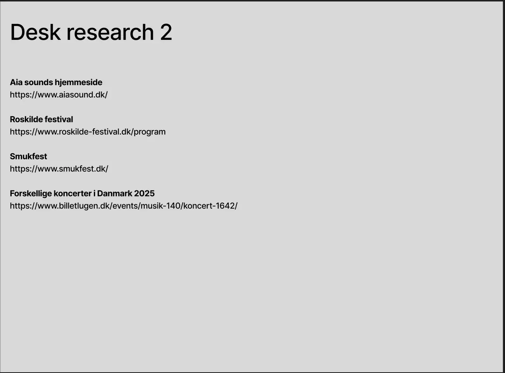

Tema 3
Beskrivelse af tema
I Tema 3 har vi arbejdet med at forstå samspillet mellem brugeren og brugergrænseflader. Vi blev introduceret til forskellige metoder og værktøjer, man kan bruge til at lave research, designe og teste af på brugeren. Det kunne f.eks. være observationer, wireframes og brugertests. Jeg har fået en forståelse for, hvordan man indsamler vigtig viden fra brugertest b.la., for at opnå det maksimale potentiale. Temaet har virkelig givet mig en god grundforståelse for, brugerne faktisk har en vigtig stemme, iforhold til design og opsætning af hjemmesiden, istedet for bare blindt at gå med ens første intention. Udover at kode vores egen hjemmeside, lærte jeg også det helt basale forarbejder som ligger før selve kodningen af hjemmesiden.
Beskrivelse af opgave
I tema 03 fik vi til opgave at udvikle vores egen hjemmeside, baseret på en selvvalgt idé. Det var en mega fed mulighed for at kombinere kreativitet med tekniske færdigheder og skabe en fed hjemmeside Jeg valgte at designe en hjemmeside om musikfestivaler i Danmark, hvor brugerne kan få et overblik over de mange forskellige festivaller rundt om i landet og læse om de kunstnere, der optræder. Målet var at skabe en brugervenlig og inspirerende platform, hvor både førstegangsbesøgende og erfarne festivals gæster kunne finde information og få lyst til at udforske nye musikoplevelser.
Klik her for at se mit projektHvordan jeg løste opgaven
Her startede vi vores proces med, vores ideudvikling, hvor vi brainstormet på forskellige emner.
Her efter begyndte jeg, at lave desk research som gav mig meget inspiration til min egen ide og førte mig her videre til styletiles og moodboards.
Da jeg havde fundet det desgin som jeg skulle bruge, begyndte vi at anvende praktise brugerundersøgelselser, likert test, 5 sekunders test og tænke højt test. Dem brugte vi til, at give feedback til vores design og opsætning af vores site.
Næste step var, at lave selve opsætningen af hjemmesiden i form af wireframes og layout diagrammer, som senere skulle føre til vores prototype. I vores prototype, testede vi hjemmesiden af på hinanden i klassen og skulle derefter i gangmed at kode.

Da vi havde kodet hjemmesiden færdigt skulle vi slutte af med at lave en Heuritisk evaluering, som vi lavede på hinandens hjemmesider. Det hjalp også med, at få de sidste rettelser på og dermed færdiggørrelsen af tema 3